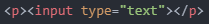

'오늘은 무엇을 해볼까?'하고 고민하던 중에 네이버 로그인 화면을 보고 '아, 오늘은 이거다!'하고 느낌이 왔습니다.
아래는 네이버 로그인 화면 사진입니다.
아직 위 사진처럼 똑같이 만들 수 있는 실력이 아니기에 기본 형태만 만들어보려고 합니다.
우선, 텍스트를 입력할 수 있는 상자가 필요합니다.
입력 상자는 'input' 태그를 이용하면 된다고 합니다.
검색해보면 알겠지만, 'input' 태그와 사용할 수 있는 속성은 매우 많습니다.
그만큼 아주 유용한 태그라고 할 수 있습니다.
저는 많은 속성들 중에서 'type' 속성과 'name' 속성을 사용할 예정입니다.
두 속성이 어떤 역할을 하는지는 코드를 통해서 배워보겠습니다.
텍스트를 입력할 수 있는 상자를 만들었습니다.
코드는 아래와 같습니다.

보시다시피 'type="text"' 속성은 텍스트 상자를 만드는 역할을 합니다.
위 상자에 텍스트를 입력해보면 비밀번호를 입력하기에는 부적절하다는 생각이 들 수 있습니다.
보통 비밀번호를 입력한다고 하면, 텍스트를 입력했을 때 '********'처럼 화면에 표시되기 때문이죠.
이땐 'type="text"'에서 'text'를 'password'로 바꾸기만 하면 됩니다.
상자에 텍스트를 입력하면 화면에 텍스트가 표시되지 않음을 알 수 있습니다.
로그인할 때, 아이디와 비밀번호를 입력하고 로그인 버튼을 누릅니다.
버튼을 누르면 연결된 서버로 연결되고, 정해진 처리 과정을 거쳐 로그인을 하게 됩니다.
'type="submit"' 속성이 그런 역할을 수행합니다.
그럼 로그인 화면을 만들어보겠습니다.
아이디:
비밀번호:
코드는 아래와 같습니다.
만약, 아이디와 비밀번호 외 다른 텍스트도 입력해야 한다고 생각해봅시다.
그러면 type="text" 속성을 두 번 사용해야 합니다.
이때, 정보를 입력하는 사람은 어떤 텍스트가 아이디를 나타내는지 구별할 수 있지만 컴퓨터는 구별할 수 없습니다.
그래서 'name' 속성을 이용하여 컴퓨터도 해당 텍스트에 대한 정보를 알 수 있게 해줍니다.
만약, 아이디를 나타내는 텍스트면 'name="id"'와 같이 말이죠.
위 코드에 'name' 속성을 적용시켜 보겠습니다.
아이디:
비밀번호:
코드는 아래와 같습니다.
보시다시피, 겉으로 보이는 차이점은 없습니다.
그래서 어떤 차이가 있는지 확인해보려고 합니다.
이 차이점을 확인하려면 아이디와 비밀번호를 입력하고 제출 버튼을 눌러 특정 주소에 접근해야 합니다.
해당 주소는 'http://localhost/login.php' 입니다.
제출 버튼을 눌렀을 때, 입력한 아이디와 비밀번호에 대한 정보가 해당 주소로 전송되도록 해야 합니다.
이때 필요한 태그가 'form' 태그입니다.
'form' 태그는 'input' 태그의 상위 태그입니다.
입력한 정보를 전송하는 역할은 'form' 태그의 'action' 속성이 수행합니다.
'action' 속성에 정보를 받는 주소를 입력해주면 됩니다.
코드는 위와 같습니다.
그럼 텍스트 상자를 하나 더 추가시키고 'name' 태그의 유무에 따른 차이점을 확인을 해보겠습니다.
첫 번째는 'type' 속성만 있는 경우입니다.
아이디에 abc, 비밀번호에 1234, 2차 비밀번호에 5678을 입력하고 제출 버튼을 누릅니다.
그리고 주소창을 확인하면 위 사진처럼 나오게 됩니다.
두 번째는 'type' 속성과 'name' 속성 모두 있는 경우입니다.
이번에도 아이디에 abc, 비밀번호에 1234, 2차 비밀번호에 5678을 입력하고 제출 버튼을 누릅니다.
주소창을 보면 어떤 것이 아이디고, 어떤 것이 비밀번호고, 또 어떤 것이 2차 비밀번호인지 구별할 수 있게 됩니다.
즉, 'localhost/login.php' 라는 주소로 데이터를 전송하게 되는데,
이때 아이디 값으로 'abc'를, 비밀번호 값으로 '1234'를, 2차 비밀번호 값으로 '5678'을 전송하게 되는 것입니다.
오늘 내용이 조금 어려운 편이어서 그런지 목표를 달성하니까 많이 뿌듯하네요.
그럼 내일도 화이팅!